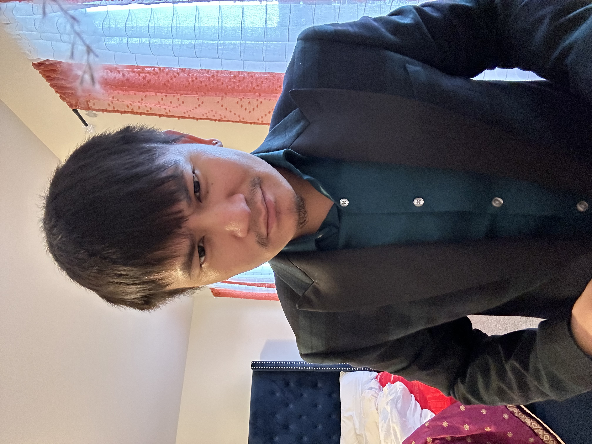

Simon Samal

Objective
Can bring great value and skills in the job. Very hard working person with varieties of skill set. Great web developer with management and orgenization skills. Able to demonstrate leadership and collabrate with teams to face any challenges.
Education
- Bacholar in Information System & Technology/Minor Cyber Security, UMSl(2019-2023)
- Associate in Fine Arts, STLCC Community College (2016-2019)
- IT Certificate, Npower (2020-2021)
- Diploma in Web Design, Shaw Academy (2020-2021)
- Diploma in Photography, Shaw Academy (2020)
Work Experience
Modis / Bection Dickinson
Field Service Technician (August 2022 - Present)
- Software upgrades on Biomedical Devices: Such as PCU, Pump, Syringe and PCA.
- Routine check and battery install on devices.
- Successfully complete installation of equipment to a high standard and in accordance with the manufacturer's direction for installation.
- Able to plan all travel arregnments and manage time properly.
- Responsible for documenting all work (accurate and up to date) carried out in relation to repairs, preventative maintenance, calibration, performance, and electrical safety testing.
Mercy Hospital
Help Desk Technician (Oct 2021 - Nov 2022)
- Understanding of IT service manager(Service Now)
- Strong troubleshooting skills.
- Understanding end user computing in an enterprise environment ( Windows 10, Active Directory, VPN, Citrix and other Softwares )
- Knowledge of different OS, Linux, Windows, Mac, Virtual Desktop.
World Wide Technology
Lab Technician
- Understanding of AC/DC currents, Use of multimeter.
- Reading and following schematics, blueprints.
- Troubleshooting and installation of hardware.
- Working in at warehouse environment and electric environment.
- Testing devices and completing order as customer's need.
Skills
| Field Service Technician |
🌟🌟🌟🌟🌟 |
| Information Technology |
🌟🌟🌟🌟🌟 |
| Photography |
🌟🌟🌟🌟🌟 |
| Web Development |
🌟🌟🌟 |
| Ethical Hacking |
🌟🌟🌟 |
|
Contact Me
My Hobbies